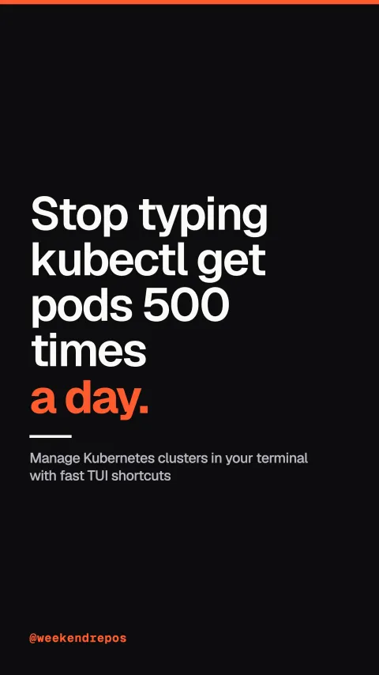

derailed/k9s
Manage Kubernetes clusters in your terminal with fast TUI shortcuts

Stop typing kubectl get pods 500 times a day.
Replace repetitive kubectl commands with one keystroke.
First, stop typing forty-character commands. k9s provides an interactive, real-time terminal dashboard that puts your entire cluster at your fingertips.
interactive TUI replaces dozens of kubectl commands
Monitor pods, deployments, and nodes with live metrics.
Second, jump between namespaces and pods instantly. CPU and memory metrics stream live in the terminal so you spot runaway containers immediately.
real-time CPU and memory usage from metrics-server
Tail logs and forward ports with a single key.
Third, press l to tail streaming logs, press s to drop straight into a container shell, and shift-f to set up port forwarding in one second.
single-key shortcuts: l for logs · s for shell · shift-f
Scan cluster health and detect misconfigurations automatically.
Fourth, built-in cluster sanitization scans your manifests for out-of-date images, missing resource limits, and dead services automatically.
built-in sanitization catches missing limits and zombie pods
Over 34,000 engineers rely on k9s every day.
It is completely open source under Apache 2.0, written in Go, with over thirty-four thousand stars on GitHub.
34.5k stars · Go · Apache-2.0 · derailed/k9s